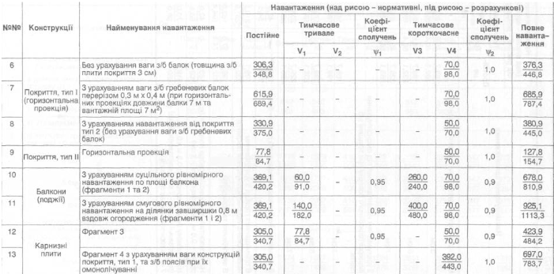

Необхідно описати веб-сторінку для навантаження конструкцій, котра виглядає отак:
| № Конструкції | Назва Конструкції | Найменування Навантаження | Навантаження | |||||||
|---|---|---|---|---|---|---|---|---|---|---|
| Постійне | Тимчасове тривале | Коефіціент сполучень | Тимчасове короткочасне | Коефіціент сполучень | Повне навантаження | |||||
| V1 | V2 | ф1 | V3 | V4 | ф1 | |||||
| 6 | Покриття, тип I (горизнтальна проекція) | Без урахування ваги з/б балок(товщина з/б плити покриття 3см) | 306,3 / 348,8 | - | - | - | - | 70,0 / 98,0 | 1,0 | 376,3 / 446,8 |
| 7 | З урахуванням ваги з/б гребеневих балок перерізом 0.3м * 0.4м (при горизонтальних проекціях довжини балки 7 м та вантажній площі 7 м^2) | 615,9 / 689,4 | - | - | - | - | 70,0 / 98,0 | 1,0 | 685,9 / 787,4 | |
| 8 | З урахуванням навантаження від покриття тип 2 (без урахування ваги з/б гребеневих балок) | 330,9 / 375,0 | - | - | - | - | 50,0 / 70,0 | 1,0 | 380,9 / 445,0 | |
| 9 | Покриття, тип II | Горизонтальна проекція | 77,8 / 84,7 | - | - | - | - | 50,0 / 70,0 | 1,0 | 127,8 / 154,7 |
| 10 | Балкони (лоджії) | З урахуванням суцільного рівномірного навантаження по площі балкона (фрагменти 1 та 2) | 369,1 / 420,2 | 60,0 / 91,0 | - | 0,95 | 260,0 / 240,0 | 70,0 / 98,0 | 0,9 | 678,0 / 810,9 |
| 11 | З урахуванням смугового рівномірного навантаження на ділянки завширшки 0,8м вздовж огородження (фрагменти 1 і 2) | 369,1 / 420,2 | 140,0 / 182,0 | - | 0,95 | 400,0 / 480,0 | 70,0 / 98,0 | 0,9 | 925,1 / 1113,3 | |
| 12 | Карнизні плити | Фрагмент 3 | 305,0 / 340,7 | 77,8 / 84,7 | - | 0,95 | - | 50,0 / 70,0 | 0,9 | 423,9 / 484,2 |
| 13 | Фрагмент 4 з урахуванням ваги конструкцій покриття, тип 1, та з/б поясів при їх омонолічуванні | 369,1 / 420,2 | - | - | - | - | 392,0 / 443,0 | 1,0 | 697,0 / 783, | |